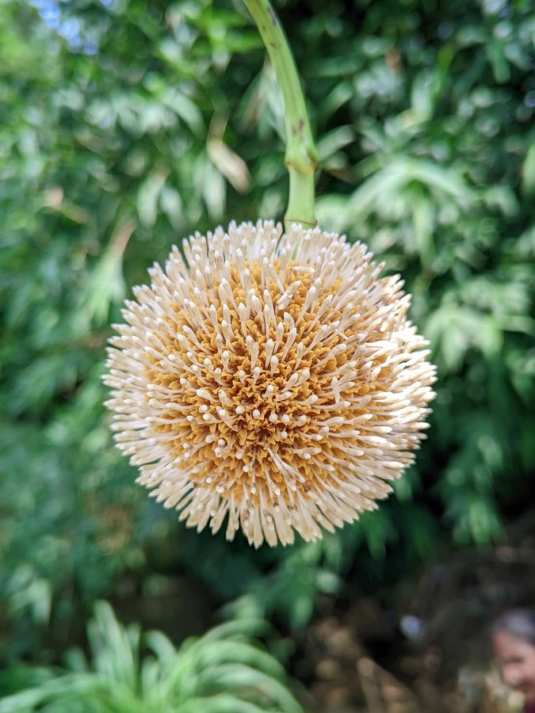

कदम्बKadam Tree
Neolamarckia cadamba · Rubiaceae · FLR-0022

- Scientific name
- Neolamarckia cadamba (Roxb.) Bosser
- Family
- Rubiaceae
- Hindi
- कदम्ब / कदम
- Status here
- native
- IUCN
- LC
When to look कब देखें
Present all year.
कदम्ब / Kadam Tree
Neolamarckia cadamba (Roxb.) Bosser — Rubiaceae
कदम्ब — कदम्ब भगवान श्रीकृष्ण का सर्वप्रिय वृक्ष है। ब्रज की कविताओं में, सूरदास और मीराबाई के पदों में कदम्ब का उल्लेख बार-बार आता है — "कदम की छाँव में राधा-कृष्ण।" पहली वर्षा के साथ इसके नारंगी-सुनहरे गोल फूल खिलते हैं, तेज सुगंध बिखरती है। यह भारत के सबसे तेज़ बढ़ने वाले पेड़ों में से एक है — प्रतिवर्ष 2–3 मीटर।
Quick Identification त्वरित पहचान
| Feature | Description |
|---|---|
| Tree form | Large (15–45 m at maturity), straight trunk, spreading crown |
| Leaves | Opposite, large (13–32 cm), shiny, ovate-elliptic, with large stipules |
| Flowers | Globose heads (4–5 cm), orange-yellow → white, intensely fragrant — unmistakable |
| Fruit | Fleshy syncarpium breaking into 8,000+ tiny fruitlets when ripe |
| Bark | Grey-brown, rough, somewhat furrowed in older trees |
| Season clue | First globose orange flower heads appear with first monsoon rain (July) |
Field tip: The ball-shaped flower head is unlike anything else in eastern UP. Orange flowers on a large tree in July = kadam. The intense sweet fragrance carries 20–30 metres.
Morphology आकारिकी
| Feature | Measurement |
|---|---|
| Plant height | 15–45 m |
| Leaf length | 13–32 cm |
| Leaf width | 6–16 cm |
| Flower diameter | 4–5 cm (globose head) |
| Fruit / seed dimensions | 4–5 cm (fruit syncarpium diameter) |
Trunk: Tall, straight, cylindrical. Bark grey-brown, becoming furrowed and rough with age. Wood light and moderately soft — not dense.
Leaves: Opposite, large (13–32 cm × 6–16 cm), ovate-elliptic, apex acuminate, glossy dark green above, paler and slightly hairy below. Paired interpetiolar stipules are prominent — a family characteristic of Rubiaceae. Leaves often appear fresh and large even in the dry season in moist sites.
Flowers: The distinctive globose head (capitulum), 4–5 cm diameter, is composed of thousands of tiny individual tubular flowers with exserted (protruding) styles. As the head opens, it changes from closed orange-yellow bud to fully open white-cream flower head. Intensely sweet and heavy fragrance — the essential oil is commercially harvested for the Kannauj attar industry.
Fruit: The head becomes a fleshy syncarpium (collective fruit) when mature. As it ripens, it breaks into approximately 8,000 tiny fruitlets, each containing 2 seeds — dispersed by wind, water, and birds.
फूल की गोल गेंद: 4–5 से.मी. का गोल फूलों का गुच्छा — अगर जुलाई में यह नारंगी-सफेद गेंद दिखे, तो कदम्ब है। खुशबू बहुत तेज होती है।
कन्नौज इत्र: इन्हीं फूलों से उत्तर प्रदेश के कन्नौज जिले में "कदम्ब इत्र" बनता है।
Ecological Role पारिस्थितिक भूमिका
Fast-growing pioneer: Kadam is one of India's fastest-growing trees (2–3 m/year). It rapidly colonises waterlogged, disturbed, and degraded moist land — making it a natural pioneer in floodplain restoration. It fixes nitrogen marginally through root associations.
Pollinator magnet: The dense, fragrant flower heads attract large bee colonies (particularly Apis cerana, INS-0007), moths, and butterflies over extended periods. A flowering kadam tree is one of the most active pollinator sites in the monsoon landscape.
Fruit for birds and bats: The fleshy syncarpium when ripe is consumed by fruit-eating birds and bats (Pteropus medius, MAM-0001). The many tiny seeds inside are dispersed widely through gut passage.
Riparian stabilizer: Root system stabilises moist and seasonally flooded soils. Planted in Terai restoration and riverbank afforestation programmes.
मधुमक्खियों का पसंदीदा: खिले हुए कदम्ब के पास जाएं — सैकड़ों मधुमक्खियाँ (INS-0007) फूलों पर काम करती मिलेंगी।
Life Cycle / Phenology जीवन चक्र
| Month | Event |
|---|---|
| Jun | Pre-monsoon growth flush; flower buds form |
| Jul–Sep | Peak flowering — coincides exactly with monsoon onset; strong fragrance |
| Sep–Nov | Fruits ripen, syncarpium breaks apart; seed dispersal |
| Oct–Mar | Vegetative growth slows in winter |
The monsoon trigger: Kadam's flowering is closely linked to monsoon onset. In eastern UP, first flower heads appear within days of first significant monsoon rain. This phenological precision has made it a traditional monsoon indicator in poetry and folk culture.
मानसून का संकेत: जब कदम्ब फूलता है, किसान समझते हैं — बरसात आ गई। कविताओं में "कदम्ब खिले, सावन आया" — यह सिर्फ काव्य नहीं, जैव-संकेत है।
Agricultural / Human Relevance कृषि एवं मानव उपयोग
Kannauj attar (उत्तर प्रदेश की विशेषता): The essential oil of kadam flowers is one of the inputs for traditional attar (itr) production in Kannauj, UP — India's perfume capital. Kadam attar is a distinct fragrance product. The distillation process ("deg-bhapka") uses sandalwood oil as the base. This is a direct economic connection between kadam ecology and a living UP craft tradition.
Wood: Light, moderately strong — used for match sticks, plywood, furniture boards, paper pulp, and packaging. The fast growth makes it attractive for commercial plantation forestry. The Forest Corporation of India promotes kadam plantations in the Terai belt.
Leaf plates (पत्तल): Large leaves used as temporary plates and leaf cups in rural eastern UP — a traditional use declining with plastic penetration.
Ayurvedic use: Bark: antipyretic, astringent — used in fever management and as a general tonic in traditional formulations.
Plantations: Commonly planted in school and government campus avenues, roadsides, and parks across UP — culturally appropriate and fast-growing.
कन्नौज का इत्र: कदम्ब के फूलों से कन्नौज में "देग-भपका" पद्धति से इत्र बनता है। यह UP की एक अनूठी सांस्कृतिक-वानस्पतिक कड़ी है।
Expected Locally स्थानीय रूप से अपेक्षित
Not a field record. Written from published accounts for eastern Uttar Pradesh. No confirmed local sighting yet — if you have seen it, that is what the atlas needs.
अभी तक स्थानीय पुष्टि नहीं। यह विवरण प्रकाशित स्रोतों से है, किसी अवलोकन से नहीं।
- Common in moist areas of Basti district — near ponds, low-lying fields, Saryu floodplain margins
- Large flowering trees attract significant bee activity in July–August — visible from distance by bee-cloud above crown
- Children known to suck the fresh flower heads for nectar — sweet, mild flavour
- Planted around many Radha-Krishna temples in Basti, Ayodhya, and surrounding villages
- Leaf plates still used at some village functions and religious feasts — alternatives to plastic
मंदिर का वृक्ष: अयोध्या और बस्ती के कई राधा-कृष्ण मंदिरों के आँगन में कदम्ब लगा है। धार्मिक महत्व ने इसे बहुत से स्थानों पर संरक्षित रखा है।
Distribution वितरण
Global range: Native to South and Southeast Asia, including India, Nepal, Bangladesh, Myanmar, southern China, Vietnam, Thailand, Malaysia, and Indonesia.
In India: Widespread in moist forest belts of the Western Ghats, Northeast India, Central India, and the Gangetic plains.
In Uttar Pradesh: Common in eastern and central districts, especially in Terai forest margins, moist plantation corridors, and near water bodies.
In Basti district / eastern UP: Cultivated and naturalized around village ponds, Radha-Krishna temples, and school campuses; grows rapidly in low-lying moist soils.
Range notes: No significant range changes documented; widely planted and maintained for its shade and religious value.
Research Questions शोध प्रश्न
- At what specific rainfall amount (mm) do first kadam flower heads open in Basti district? Is this threshold consistent year to year?
- Which bee species (and at what density) work kadam flowers in eastern UP — can this be counted and compared with adjacent non-flowering periods?
- Is kadam attar from eastern UP being produced, or is the craft limited to Kannauj district only?
- How do kadam trees affect local hydrology in seasonally waterlogged fields — do they accelerate drainage or retain moisture?
- Which bird species disperse kadam seeds, and how far do they travel with the tiny fruitlets?
Similar Species मिलती-जुलती प्रजातियाँ
| Species | How to distinguish |
|---|---|
| Mitragyna parvifolia (Kaim, कइम) | Also Rubiaceae; flower heads smaller, not as fragrant; fruit not fleshy |
| Lagerstroemia speciosa | Sometimes called "Kadamba" locally; but purple flowers, very different |
Taxonomy & Classification वर्गीकरण
Original description. Neolamarckia cadamba was first described by William Roxburgh in 1824 as Nauclea cadamba in Flora Indica 2: 121. It was transferred to the newly erected genus Neolamarckia by Jean Marie Bosser in 1984 in Bulletin du Muséum National d'Histoire Naturelle, Section B, Adansonia 6(3): 247. Type locality: India. The genus name Neolamarckia honors the French naturalist Jean-Baptiste Lamarck, with the prefix neo- to distinguish it from an earlier homonym.
Subspecies. Monotypic — no subspecies are currently recognised.
Family and order placement. Belongs to the order Gentianales, family Rubiaceae, subfamily Cinchonoideae, tribe Naucleeae. Rubiaceae is a major flowering plant family containing about 620 genera and 13,500 species, well known for economic plants like coffee (Coffea) and quinine (Cinchona).
Phylogenetic notes. Neolamarckia cadamba was historically placed in the genus Anthocephalus. Molecular phylogenetic studies led to its relocation, showing that Neolamarckia is distinct from true Anthocephalus (which lacks fleshy fruits and has different seed features).
IUCN status rationale. Classified as Least Concern (LC) by the IUCN Red List. It is widespread, abundant, and grows rapidly across its native range, facing no immediate threats of extinction.
Photo Gallery फ़ोटो गैलरी
No photos yet — photograph globose flower head close-up, bee activity on flowers, large stipules, fruit syncarpium.
Atlas Connections संबंधित प्रजातियाँ
- Asian Honey Bee — major pollinator of kadam flowers (INS-0007)
- Indian Flying Fox — fruit disperser; feeds on ripe syncarpium (MAM-0001)
- Common Kingfisher — perches on riverside kadam branches (BRD-0010)
- Arjun Tree — co-occurs in riparian habitat (FLR-0020)
References सन्दर्भ
- Roxburgh, W. (1824). Flora Indica, Vol. 2: 121. Mission Press, Serampore.
- Bosser, J. (1984). Sur le type du Nauclea cadamba Roxb. (Rubiaceae). Bulletin du Muséum National d'Histoire Naturelle, Section B, Adansonia, 6(3): 247–248.
- Patel, R.K. (2011). Neolamarckia cadamba — traditional uses and phytochemistry. Journal of Ethnopharmacology, 134(1): 12–22.
- Basu, B.D. (1918). Indian Medicinal Plants. Vol. II.
- Botanical Survey of India — Flora of Eastern Uttar Pradesh, BSI, Allahabad.
- Kannauj Attar Industry Report (2019). Fragrance & Flavour Association of India.
- GBIF Occurrence Data — Neolamarckia cadamba, India (2026).
Source file: species/flora/trees/kadam.md